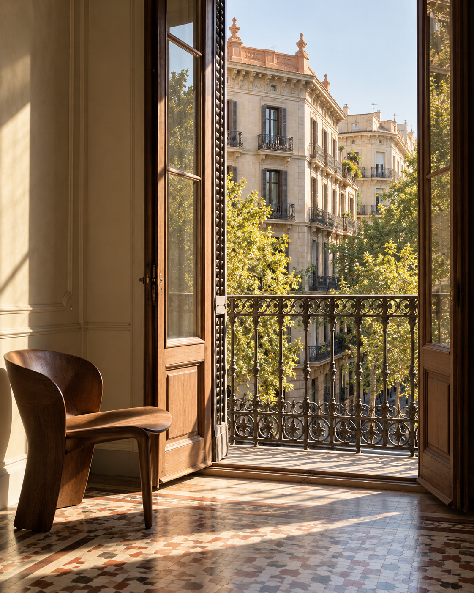
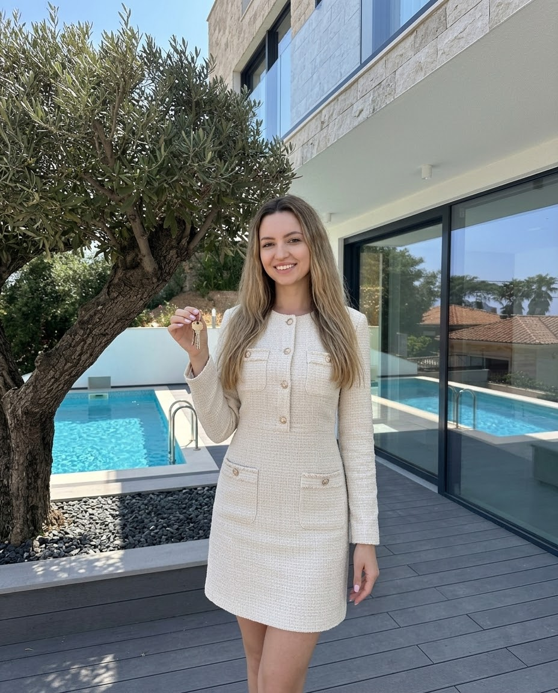

Разговор
Формулируем сценарий жизни, географию и рамки поиска.

Личная сторона сделки
Персонально ищу премиальную недвижимость в Испании — под вашу жизнь, а не под готовый каталог.
Поиск и сопровождение — платная услуга. Состав работы и вознаграждение фиксируются в договоре до начала поиска.
Квартира в городе, дом у моря, вилла или резиденция — форма становится понятной из вашего запроса, привычек и планов.
Посмотреть подходЯ представляю интересы покупателя: от постановки задачи до сопровождения выбранного решения.
Формулируем сценарий жизни, географию и рамки поиска.
До поиска согласовываем объём работы и вознаграждение.
Собираю и проверяю варианты, включая закрытые предложения.
Помогаю удерживать критерии и двигаться к покупке последовательно.

Концептуальная иллюстрация, не объект продажиТри направления
Барселона, Коста-Брава и Коста-Бланка дают разные сценарии. География уточняется вместе с вами, а не задаётся витриной.

Моё участие
Я уточняю запрос, веду поиск и сохраняю общий контекст решений. Конфиденциальность и интересы покупателя — часть самого процесса.
На сайте могут появляться отдельные предложения, но они не заменяют персональный поиск.
Эксклюзивные предложенияКоротко обозначьте тип, регион и бюджет. Локальный прототип ничего не отправляет.
Сформулировать запрос